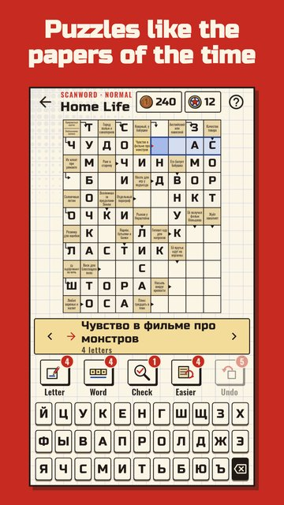

Scanwords from the USSR
The paper for word lovers · Out every day
Scanwords and word searches about everyday life in the Soviet Union: clues like the newspapers of the time, films and cartoons, groceries and space.
Solve arrow scanwords, find hidden words in word searches and build a personal dictionary of every word you solve.

- Two modes in one game: 300 arrow scanwords and 450 word searches.
- 15 themes of Soviet life: home, cinema, cartoons, food, transport, school days, space, shops, music, sport, radio, jobs, holidays, press and building.
- Clues in the style of the newspapers of the time — no politics, just warm memories.
- Uncle Misha from the newspaper kiosk cheers every solved issue.
- A daily issue and a word of the day: the same for everyone, missed ones of the past week wait in the archive.
- Three tasks every day and a weekly goal with a parcel from the kiosk.
- Festive issues for New Year, 8 March, Cosmonautics Day and the first of September, with keepsake stamps.
- Your personal dictionary: every word you solve with a note, search and favourites.
- Kopecks and badges for solved issues, handy hints and large letters.
- Play offline. No purchases.
Please note: scanwords are in Russian; word searches are in English (150) and Russian (300).
Grab a glass of tea and crack the word!